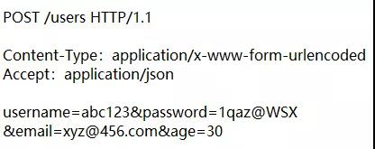
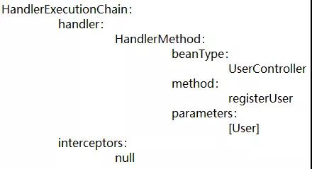
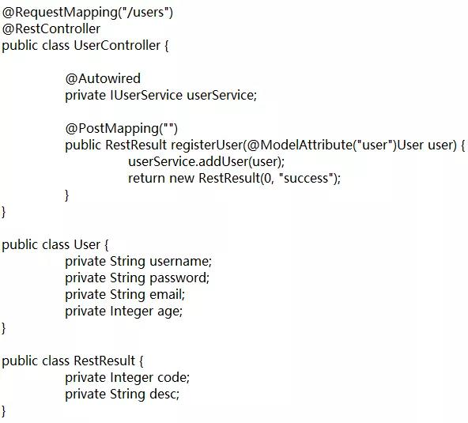

原文连接:https://www.cnblogs.com/lixinjie/p/a-story-about-springmvc-and-tomcat.html
Tomcat城市
Tomcat这座城市的历史相当悠久了，经历过几次大的变迁后，呈现出非常明显的地域特征。
从城市往西走，过了城乡结合部以后，可以说是满目疮痍、一片破败，这就是Servlet地区，这座城市一开始就是从这个地方发展起来的。
哎，这都是很多年前的老黄历了，只有一些老人才知道这些，现在的年轻人都不到这个地方来了，于是就荒芜了，快成无人区了。
城市的中央是Struts地区，人们习惯称它为老城区。矮矮的居民楼，窄窄的街道，三五成群的老旧工厂。
虽然现在没落了，但是置身其中，你依然能够感受到它曾经辉煌过的痕迹，那时也应该是灯红酒绿、人声鼎沸、好不热闹。
现在这里只剩下一些老年人了，年轻人觉得这里太陈旧了，都纷纷搬走了，偶尔能见到几个，那是回来看望父母的。
从城市往东走，出了老城进入新区，高楼大厦、玻璃幕墙，大宽马路、人流成河。红灯绿灯、南来北往，车声人声、声声不息。
这里充满了大量的年轻人，节奏感、时尚感、科技感，有梦想、有压力、有希望。没错，这就是大名鼎鼎、闻名遐迩的SpringMVC地区。
技术的发展就像城市的变迁，有新区就有老城。所谓长江后浪推前浪，一浪更比一浪浪，真是够浪，嗯，golang。
编程新说注：
第一代web应用Jsp+Servlet，现在基本没人用了，成了无人区了。
第二代web应用Struts1.x、Struts2，曾经辉煌时很多人用，现在都是进入维护期的老项目了，就像老城区。
第三代web应用SpringMVC，现在如日中天，依然是主战场，就如同城市的新区。
不过SpringMVC并非固若金汤，它的挑战者已经出现，就是响应式web应用，它现在不仅要面临外患，还有来自内忧的困扰。
请看之前写过的这篇文章“爸爸又给Spring MVC生了个弟弟叫Spring WebFlux”，了解更多的“同室操戈”。
破旧的火车站
request奉主人之命，坐了“一夜”的火车，“长途跋涉”后来到了tomcat城市，按照约定，他的弟弟response会来这里接他。request刚下了车，他弟弟就迎了上来，没想到他跑到站台上来接自己了。
request边走边四处打量着，这座车站虽然略显破旧，但结构设计合理，层层叠叠、环环相扣，真是建筑之美啊。
他突然意识到自己是第一次来这里，还不知道路怎么走，看到不远处有一老者在扫地，打算前去问路。眼看就要到了，不料被四个人“截胡”了。
其中两个人说他们要找一个叫MyServlet的人，老者说出门往西走就行了。另外两个人说要找一个叫FilterDispatcher的人，老者说出门往前走就行了。
看着他们四人离去的背影，老者无奈地摇了摇头，又自顾自地开始扫地。request上去询问为何这般，老者解释道，这四位可是稀客啊，现在像他们这样的人已经很少了。几乎都是去找DispatcherServlet的人。
request说道，我们就是要去找DispatcherServlet呀，老者说，出门跟着人流走，保证能找到。为了礼貌，request询问了老者的姓名，老者说，他是Wrapper，在这里工作十几年了。
request和response跟老者道谢后，就离开了。出门后，好不容易挤上了一辆公交，一路向东奔去。
编程新说注：
MyServlet一般是一个刚毕业的学生起的名字。
FilterDispatcher是Struts2的核心控制器。
DispatcherServlet是SpringMVC的核心控制器。
Wrapper是Tomcat内部的一种容器组件，负责Servlet的调用执行。
SpringMVC科技园区
“前方到站SpringMVC科技园，有下车的乘客，请携带好随身物品，从后门下车”，两兄弟好不容易挤到后门，下车了。
眼前的这个科技园四四方方，里面的高大建筑布局合理。门前的宽大道路干净笔直，向南北无限延伸。旁边的小路绿树成荫、鲜花满地。
这里的一切都极具现代化都市气息，兄弟俩早已忘我。一阵急促的嘈杂声响起，哦，原来是绿灯亮了，可以过马路了，随机又淹没在人群中。
两兄弟在园区门口被保安拦下，“恁俩是弄啥嘞？”，保安问道。两兄弟一听，咦，河南人，心里乐了。说道，“老乡，俺是来找一个叫DispatcherServlet的人”。保安道，“那中，他一般都可忙啦，恁俩先去那边树荫下凉快凉快吧”。
一会儿功夫，有一个中年微胖男人来到了门口，就是他了。两兄弟表明来意后，request递上了一张“介绍信”，上面似乎写着：

DispatcherServlet看后，心里暗骂一句，这是哪个小兔崽子在写着玩呢。不过人既然已经来了，那就按照程序走吧。
他就带着两兄弟来到了一个房间门口，说先进去检查一下，看看有没有“携带大件行李物品”。只见response准备进去，一把被他拉回来，说你不用去，只要你哥哥去就行了。
request来到门前，只见上面写着checkMultipart，推门而入，有个叫MultipartResolver的工作人员，正准备对他搜查，一看Content-Type，嘟囔着说原来只是普通表单提交没有附件，随即放弃了对request的检查，让他直接出去了。
request一脸懵逼，他原以为来到这里后，会有人专门带着他参观，给他讲解，端茶倒水啥的。谁知就像进了医院体检一样，拿个“单子”乱跑。
正在郁闷着的request在走过一个叫getHandler的房间门口时，被叫停了，他知道又该进去被检查了。一个叫RequestMappingHandlerMapping的家伙坐在电脑后面，request赶紧递上自己的单子。
那个家伙瞄了一眼单子后，在输入框里敲上“POST /users”关键字，点击搜索按钮，只见结果的第一条就是一个叫UserController的小伙子。并把这个小伙子的信息打印到一张纸上给了request。
request接过纸，边往外走边看，只见上面写着：

request又是一脸懵逼，这都什么玩意儿呀。不过定睛一看，发现了熟悉的字眼儿。如UserController、registerUser、User。
request隐隐约约当中记得自己的主人写过一些和他们相关的东西，好像是这样的：

此时，request仿佛明白了，刚才那个家伙根据我的“单子”，使用电脑搜索，为我开了个“方子”。说UserController这个小伙子的registerUser方法“可以治我的病”，其中User是方法入参。
request正准备沾沾自喜，怎么脑门突然一阵疼痛，莫非是得意忘形受了诅咒，哦，不是，是撞到门上了。揉了揉脑袋，便出了门。
三人一行继续往前走，request心里明白，现在这充其量叫作“做检查”，后面非给我来一个“大的修里”不可。又在一个叫做getHandlerAdapter的房间门口停住了。
不过这次两兄弟都在外面等着，是DispatcherServlet亲自拿着给request开的“方子”进去了。不一会他就出来了，又带出来一位叫RequestMappingHandlerAdapter的人，说这位是高级技工，由他来完成一部分核心工作。
这位高级技工带着两兄弟向自己的地盘走去，来到了一个写着handle的门前，推开门一起进入。这是一个非常大的房间，里面有好多的工作人员和机器设备，两兄弟明白，是时候了，重大的事情将在这里发生。
高级技工让两兄弟躺到工作台上，然后让所有人员各就各位，接着就是“生死看淡，不服就干”，于是，一切井然有序地开始了。
一个叫ServletInvocableHandlerMethod的家伙是本次的主要操盘手，他依次点名了自己的队友和检查了要用的设备，一切正常，下面正式开始了。
操盘手拿到给request开的“方子”，发现需要调用registerUser方法，于是先通过反射拿到这个方法的参数，再经过一番解析后变成了MethodParameter类型啦，对，它就表示方法的参数。
操盘手让他的队友ParameterNameDiscoverer去查看下参数的名字是什么，队友拿到参数，惊奇地发现上面有个@ModelAttribute("user")注解，于是从注解中读到了user，它就是参数的名字了。
操盘手又让他的队友HandlerMethodArgumentResolver去想办法把参数值搞定，队友也发现了@ModelAttribute("user")注解，说明这个参数是个模型数据，而且不是简单类型。于是先打开设备ModelAndViewContainer，发现设备里并没有一个叫user的数据。
队友明白，需要自己来生成这样的一个参数了。先拿到参数类型User，然后反射一下构造函数，发现正好有个默认无参的，通过它就new出了一个User类型的对象了。
队友接着反射一下它的属性，发现有4个，username、password、email、age。接着从request中恰巧能找出这4个名称的值，使用WebDataBinderFactory设备把数据类型合理转化后，设置给了user对象。这样队友就把参数值给准备好了。
有了registerUser方法和user参数后，还要知道在哪个对象上调用才行啊，于是操盘手根据方法所在的类型UserController，去容器中找到它的bean实例，接着就在该实例上通过反射发起了方法调用，传进去入参，并获取返回结果。
操盘手拿到返回结果，简单检查后发现返回结果不为null，再检查request的弟弟response，发现没有出现错误，而且还没有执行结束。于是在ModelAndViewContainer设备上把该请求标记为尚未处理完。
然后把返回结果交给队友HandlerMethodReturnValueHandler去处理，队友发现方法所在的类UserController上标有@ResponseBody注解（是作为@RestController的元注解出现的），瞬间就明白方法的返回值是直接作为web请求的响应的。
由于方法的返回值是要直接写入response的，所以就完事了，不用考虑视图解析这一块了。因此队友就在ModelAndViewContainer设备上把本次请求标记为已处理完成。
接着就把方法的返回值交给自己的好朋友HttpMessageConverter去处理，好朋友看了request的“单子”一眼，发现上面有Accept：application/json，瞬间也明白了，原来他想要的是JSON格式呀。
于是把方法返回值发给合作伙伴Jackson，不一会给他发回了结果，{"code":0,"desc":"success"}，好朋友把这个结果甩给了response，叫他拿好了。
好朋友完成了队友的任务，队友完成了操盘手的任务，操盘手向高级技工报告，任务已成功完成，请检阅。
高级技工本来打算输出一个ModelAndView作为处理结果呢，一检查ModelAndViewContainer设备发现请求已被处理完了。罢了，那就返回一个null吧。
门开了，两兄弟出来了，哥哥request已被“消耗殆尽”，弟弟response“满载而归”。DispatcherServlet早已在此等候，他看到高级技工手里只有一个null，于是记录了一句话，“No view rendering, null ModelAndView returned.”。
两兄弟和DispatcherServlet道谢后来到了园区大门口，接着和老乡保安挥手告别。此时天色已晚，挤上一辆公交车后，直奔火车站而去。
就此一别，再无相见
一路摇摇晃晃来到火车站，天已完全黑透了。返程的列车早已整装待发，弟弟response拉着哥哥的手准备一起上车，被哥哥拒绝了，哥哥说按照剧情应该只有你一个人回去。我的使命已完成了。
弟弟并不明白哥哥是什么意思，就问道那我们还能不能再见面。哥哥笑着说傻孩子，“当然可以了”。弟弟高兴地跳上了车。
伴着一声长鸣，列车启动，兄弟俩互相挥手告别，列车渐渐消失在黑夜的黑中。弟弟没有看到哥哥微笑的眼角流下了流水。
只有哥哥心里明白，他和弟弟，就此一别，再无相见。转身向车站外走去，看到那个老者依然在自顾自的扫着地。
黑白无常拿着脚镣手铐，早已在此“恭候多时”，有气无力的request全然无法反抗，任由这“二鬼”拖着去“阴曹地府”接受JVM的轮回。
也许老天不愿意看到一个光荣完成使命的人就这般的“烟消玉损”，就派出了钟馗来解救他。钟馗打跑了黑白无常，希望带request“永生”。
request婉言拒绝，说我非“三界五行”之外，我依然是凡人，依然有自己的宿命。这是任何人都无法逃离的自然规律。
顷刻，一束白光从天而降，洒满request的全身，只见request张开双臂，身轻如燕般的飞向光的源头，不一会便没有了踪迹。
（END）
作者是工作超过10年的码农，现在任架构师。喜欢研究技术，崇尚简单快乐。追求以通俗易懂的语言解说技术，希望所有的读者都能看懂并记住。下面是公众号和知识星球的二维码，欢迎关注！